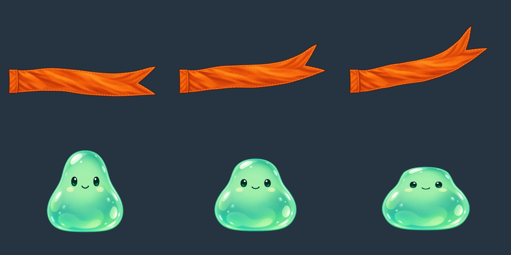
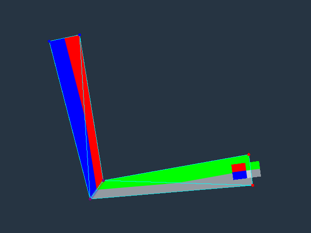
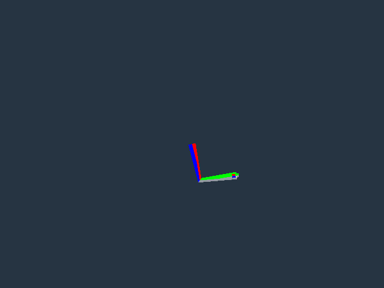

Ảnh do evaluator, Pixi WebGL và ObservationService của sản phẩm tạo. Fixture thử renderer, chưa nghiệm thu chuyển động Gate 2.
Tải chuỗi khăn · Tải chuỗi thạch · Dữ liệu đo và bounds · Kiểm tra màu/alpha/tài nguyên

Mesh có weights và region bàn chân dùng cùng Pose đã giải IK. Ảnh bên trái có overlay; ảnh bên phải dùng camera quan sát bảo thủ nên có thêm khoảng trống.

